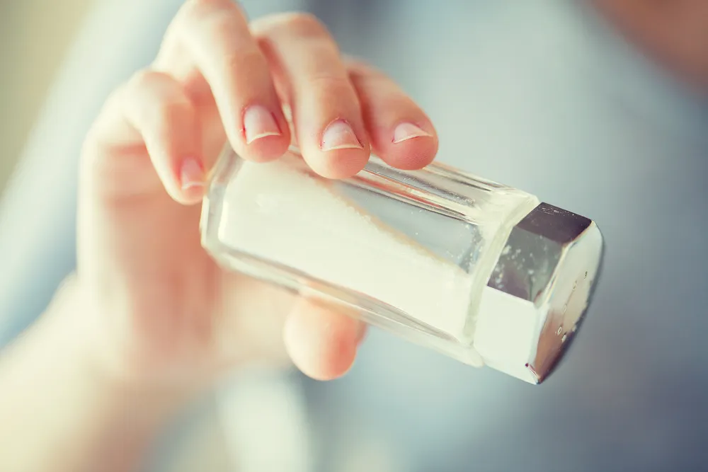

Pros and Cons of Eating Salt

Salt —in the form of iodized table salt and sodium—is essential to life, but in what quantity should it be featured in your diet ? While getting the right amount is important, getting too much or too little can lead to health problems.
Your body is designed to process salts, however certain quantities added to food can prove too much for our kidneys to handle. This can especially be dangerous if you have pre-existing health conditions. Let’s take a look at six pros and cons of having salt in your diet…
Too Much Leads to Hypertension
As an article on WebMD points out, too much salt can lead to high blood pressure . It cites an experiment by the Dietary Approaches to Stop Hypertension program (DASH) directed by the National Heart, Lung and Blood Institute that studied the effects of salt intake.
In the experiment, three groups consumed different levels of salt from 3,300-milligrams per day down to 1,500-milligrams per day (the middle group at 2,400-milligrams daily actually was getting the recommended intake levels). There was a direct correlation between the amount of salt consumed and blood pressure levels, according to the article.
Salt Protects Against Bacteria
A 2015 TIME magazine article entitled “The Weird Benefit of Eating Salty Food” explains, “Salt, it seems, may be an ancient way for the body to protect itself against bacteria.” The research cited in the article notes salt can ward off harmful microbes (bad things containing bacteria).
Studies involving mice and human cells showed that levels of sodium are higher at an infection site, and that without the salt bacteria can thrive. The article also notes this was discovered by accident—a mouse bitten by cage mates had higher levels of sodium in their skin.
Salt Leads to Water Retention
While salty food can make you feel thirsty, SFGate notes that excessive sodium can cause your body to retain water, which in turn increases the volume of blood in your veins and taxes the heart.
This increased water content in your blood causes more pressure on your circulatory system, which raises your blood pressure and can lead to heart disease (or even heart failure) or a stroke, notes the source. It should also be noted that salt is important to “extracellular fluid” (fluid outside your cells) which can boost or slow down your metabolism.
Salt Aids in Muscle Function
According to SFGate’s Healthy Eating page, salt can help contribute to healthy muscle contractions through the proper transmission of nerve signals. One of the keys to these muscle and nerve functions is electrolytes, which actually helps conduct electricity.
Electrolytes are created by salts dissolving in fluids, which breaks down the salt into its components. As explained by BuiltLean.com, table salt breaks into two components when dropped in water—sodium (a positive ion) and chloride (a negative ion). That explains why commercials for sports drinks are always pushing electrolytes—apparently they work.
Sodium Can Lead to Kidney Stones
Salt can cause your kidneys to release more calcium into your urine—according to the National Institute of Diabetes and Digestive and Kidney Diseases (NIDDK), this calcium bonds with phosphorus to form stones .
While you may be inclined to reduce calcium intake because of this, the institute advises to cut your salt intake instead. There’s room to move on this: while the recommended intake is around 2,300-milligrams per day, most Americans are at 3,400-milligrams, according to the source. Also add more water to your diet.
Salt Regulates Body Heat
The Rush University Medical Center explains how salt concentrations help regulate your body temperature. The area of the brain called the hypothalamus is responsible for this function, acting as a sort of “thermostat” for your body, notes the source.
It explains that it triggers the middle layer of your skin—called the dermis—to bring water and salt to the skin’s surface when you’re overheating, causing the water to evaporate and naturally cooling you (this is commonly known as sweating). Speaking of sweating, it can help reduce bacteria on your skin and reduce your chance of developing kidney stones.
Source: https://activebeat.com/health-news/tabling-6-pros-and-cons-of-salt-in-your-diet/